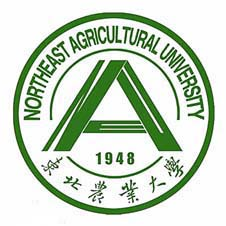

东北农业大学
普通本科
公办
高校层次
农林类
211
双一流
所属地区
黑龙江•哈尔滨市
东北农业大学是一所“以农科为优势，以生命科学和食品科学为特色，农、工、理、经、管等多学科协调发展”的国家“211工程”重点建设大学和世界一流学科建设高校，是黑龙江省人民政府与农业农村部省部共建大学、国家“中西部高校基础能力建设工程”项目入选高校、教育部本科教学工作水平评估优秀院校。

| 专业名称 | 层次 | 学制 |
|---|---|---|
| 农学 | 本科 | 四年 |
| 植物保护 | 本科 | 四年 |
| 种子科学与工程 | 本科 | 四年 |
| 农业机械化及其自动化 | 本科 | 四年 |
| 动物医学 | 本科 | 四年 |
| 生物技术 | 本科 | 四年 |
| 农业水利工程 | 本科 | 四年 |
| 园艺 | 本科 | 四年 |
| 国际经济与贸易 | 本科 | 四年 |
| 应用化学 | 本科 | 四年 |

gentlejin
生物工程
在东北高校集体衰退、且农业类院校弱势的环境下，东农在排名上成了未流211，但当初绝不是为了照顾而评上的，实力绝对是有的。据我所知，目前在大多数省份最低投档线已经在一本线50分以上了，生源质量还是有保障的(当然绝对没有非常好)。
职朋9472134
物流工程
学校里面的环境很好好，学校面积很大，占地7400+亩，从南门走到北门，近3公里，要花半小时，所以没有自行车尽量坐校车吧。宿舍很暖，冬天室内有的时候还需要开窗户。东农有8个食堂，南区有南一、食街、南二、饺子园、棘园、清真馆、北区有北三，北四食堂，特别地好吃，还实惠 (5-13块肉菜素菜搭配)。在哈尔滨的高校里流传着“学在工大吃在农大”这样一句话，很多别的大学的小伙伴和其他教师会慕名而来农大专门吃饺子，农大的饺子园”是哈尔滨各大高校的一个特色。
墨维谷
车辆工程
黑龙江省211学校的垫底院校，如果分数能再高一点可以选择去东北林业大学。食堂的话还是不错的，身为一个农业大学，食堂一共有六个，南区四个北区两个，东大的饺子园一直都是很火爆的，一到饭点基本上是找不到座位的。如果报考的话，最好还是报考食品专业的吧，毕竟学校的一流专业好像就在食品学院。
没有更多了~